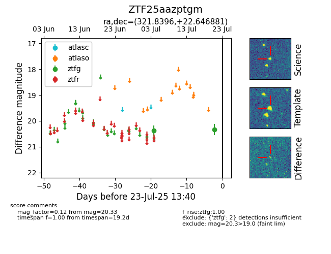

Target ZTF25aazptgm at 2025-07-23 11:52, see:
FINK: fink-portal.org/ZTF25aazptgm
Lasair: lasair-ztf.lsst.ac.uk/objects/ZTF25aazptgm
ALeRCE: alerce.online/object/ZTF25aazptgm
alt names
ZTF25aazptgm (ztf,fink)
coordinates:
equatorial (ra, dec) = (321.8396,+22.64688)
galactic (l, b) = (73.1849,-19.94414)
photometry
last ztfg=20.33
2 ztfg detections
